- Index
-
 ImageMagick Examples Preface and Index
ImageMagick Examples Preface and Index
-
Known and Fixed Bugs Index
Exploration of the distance algorithm used by
-fuzz color matching algorithm. Especially with regards to
transparent colors.
The
Fuzzy
Distance Matching formula should
- Oaqpue color distance should reflect the color space (EG:
RGB or CMY color cubes, or HSL cones etc). Specifically Black
to White color distance should be 100%
- All Color with full transparency, should be classed as
being identical. That is they have zero color distance.
- Two colors with partical transparency should be closer
thna the same colors without any transparency (opaque)
- Transparent colors should have some distance
non-transparent colors.
- Fully-Transparent should be equally distance from all
fully-opaque colors
The current IM formula (before IM v6.6.6-4) follows all
but the last of these recommendation, which causes some
problems when transparency is involved. For example... Here we
fuzzy match at various percentage distances between the
fully-transparent Black (or '
None' and a color
wheel of opaque colors...
for P in 50 60 80 100 110; do
convert colorwheel.png -alpha set -channel RGBA \
-fuzz $P% -fill none -opaque none \
-fill black -gravity SouthWest -annotate +2+2 "$P%%" \
miff:-
done |\
montage - -tile x1 -background none -geometry +2+2 fuzz_none_color.png
|

As you can see any fully-opaque near black color will
match the fully-transparent black color '
none'
before other fully-opaque colors, between 50 and 60% In other
words the color '
None' is currently closer to
black, than other opaque colors. Stranger still white does not
match until just after 110%!Here is another example that
clearly shows that opaque colors are not the same distance from
full transparency. This generates a greyscale and transparency
gradient, and then replaces 'similar colors' to
full-transparency.
convert -size 100x100 gradient: \( +clone -rotate 90 \) +swap \
-compose CopyOpacity -composite gradient.png
convert gradient.png -channel RGBA \
-fuzz 25% -fill Red -opaque None fuzz_gradient_25.png
convert gradient.png -channel RGBA \
-fuzz 50% -fill Red -opaque None fuzz_gradient_50.png
convert gradient.png -channel RGBA \
-fuzz 75% -fill Red -opaque None fuzz_gradient_75.png
|
Remember the distance from 'None' to 'White' is just over
110% ! And all fully-transparent colors are 0 distance
(regarded as equal).
As of IM v 6.6.6-4, bug has been
fixed. Basically the
IsMagickColorSimilar()
function was set to use the equivelent of the last formula
below.
Here is what the LAST image in the above looks like from
IM v6.6.6-4 on, where the fuzz factor has been fixed with
regard to transparencies.
convert gradient.png -channel RGBA \
-fuzz 75% -fill Red -opaque None fuzz_gradient_75_fixed.png
|
|
|
As you can see all opaque colors will now be treated as
an equal 100% distance from fully-transparent. Note however
that a semi-transparent color, does still have a valid color,
and as such opaque colors will not all be equal distance it.
However the close a color is to fully-transparent, the more
equidistant the opaque colors are from it. That is as it should
be.
FX Formulas...These are
expressed as FX formulas where 'u' is the first image and 'v'
is the second image, See
Using FX,
The DIY Image Operator, in the expresion...
convert xc:color1 xc:color2 -print \
"%[fx:...expression...]%%" \
null:
|
RGB Opaque Color Distance...
"%[fx:(100)*sqrt(( (u.r-v.r)^2 +
(u.g-v.g)^2 +
(u.b-v.b)^2 )/3 )]%%" \
|
(no transparency handling)
RMSE Distance?
"%[fx:(100)*sqrt(( (u.r-v.r)^2 +
(u.g-v.g)^2 +
(u.b-v.b)^2 +
(u.a-v.a)^2 )/4 )]%%" \
|
(But "compare -metric RMSE" different values!)
Color with Alpha Multiply
"%[fx:(100)*sqrt(( (u.r*u.a-v.r*v.a)^2 +
(u.g*u.a-v.g*v.a)^2 +
(u.b*u.a-v.b*v.a)^2 )/3 )]%%"
|
(This results in '
Black' ==
'
None' )
Current (buggy) fuzz calculation being used (to IM
v6.6.6-3)
"%[fx:(100)*sqrt(( (u.r*u.a-v.r*v.a)^2 +
(u.g*u.a-v.g*v.a)^2 +
(u.b*u.a-v.b*v.a)^2 +
(u.a-v.a)^2 )/3 )]%%"
|
(Added transparency difference, but Black still
closer to None than white)
The correct calculation should be (implemented IM
v6.6.6-4)
"%[fx:(100)*sqrt( ( (u.r-v.r)^2 +
(u.g-v.g)^2 +
(u.b-v.b)^2 )*u.a*v.a/3 + (u.a-v.a)^2 ) ]%%"
|
Note how the 3-D RGB color distances is vastly simplified
and handled, almost as a completely separate item to the alpha
channel distance. Also note that if either color is fully
transparent, the actual color become irrelevent, and the fuzz
factor becomes strictly a simple alpha distance fuzz factor. In
this scheme...
- The distances white to black is 100%,
- Distance of any transparent to any opaque color is
100%,
- any two fully-transparent colors are equal or 0%
distant.
Other color space can also easilly use this formula as the
'color space' distance is just a simple and complete component
of the additional alpha channel component.
UPDATE: this
color distance metric is now also used for
"compare
-metric Fuzz"
{kind=link}
{kind=link}
{kind=link}
{kind=link}
{kind=link}
{kind=link}